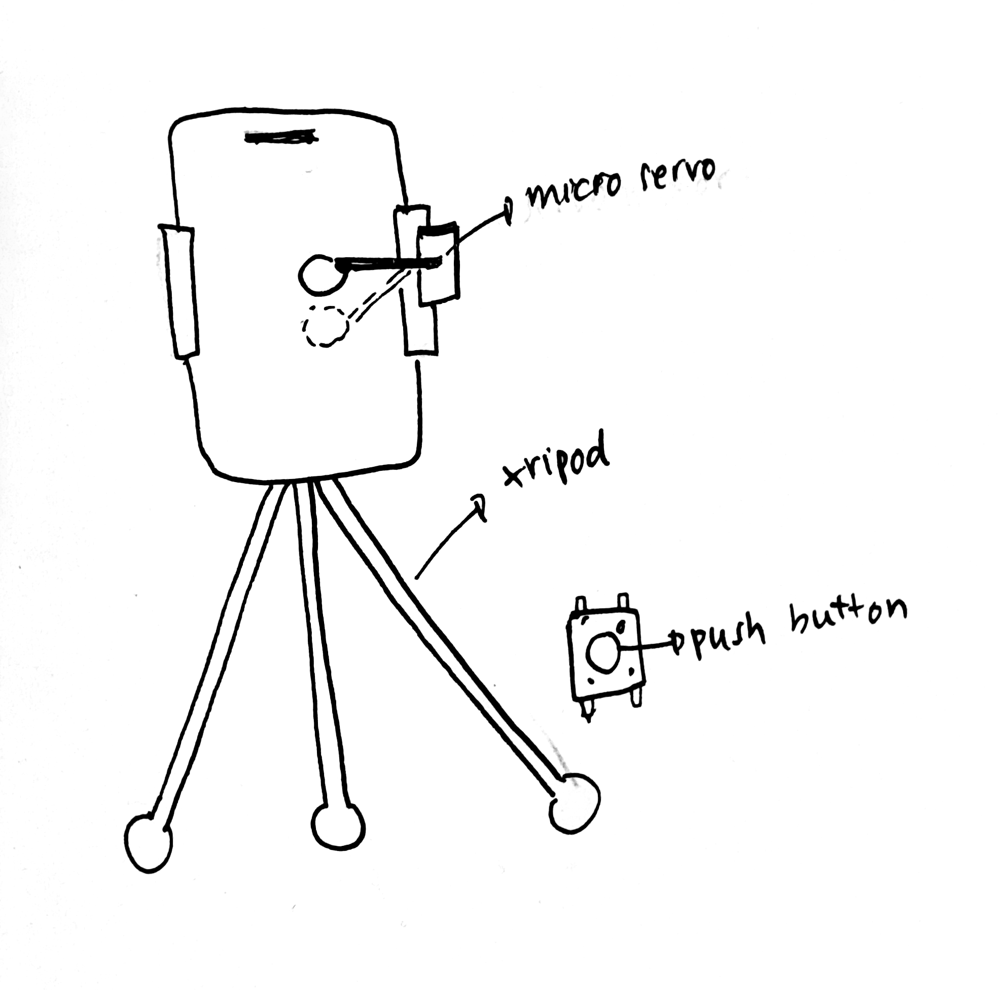

IDEA 1(The Doomscroller)
A device that helps you scroll on reels better, to rot your brain even more.

A tripod holds up up the phone with a micro servo attached to the side. The button is pressed and the micro servo acts as a thumb to scroll up the reels. An LED light turns on to indicate that the button is on.